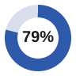
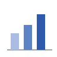
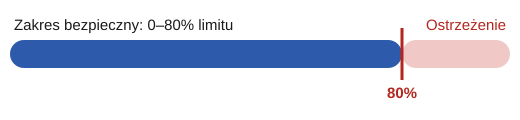

Limit miesięczny
1 980 zł z 2 500 zł
Zostało 520 zł na 12 dni. Ostrzeżenie wysyłamy po przekroczeniu 80%.
Limit miesięczny 2 500 zł. Wykorzystano 1 980 zł, zostało 520 zł do 31 października.

1 980 zł z 2 500 zł
Zostało 520 zł na 12 dni. Ostrzeżenie wysyłamy po przekroczeniu 80%.

Jedzenie 640 zł
O 90 zł więcej niż we wrześniu. Limit kategorii wynosi 700 zł.
| Kategoria | Kwota | Limit | Stan |
|---|---|---|---|
| Jedzenie | 640 zł | 700 zł | 91% limitu |
| Dom | 1 180 zł | 1 200 zł | 98% limitu |
| Transport | 120 zł | 300 zł | 40% limitu |
| Subskrypcje | 40 zł | 100 zł | 40% limitu |
Próg ostrzeżenia liczymy osobno dla limitu miesięcznego i dla każdej kategorii. Powiadomienie wychodzi raz, w chwili przekroczenia progu, a nie przy każdej kolejnej transakcji.

Nie. Dane wpisujesz ręcznie albo wczytujesz z pliku CSV. Logowanie do banku nie jest wymagane na żadnym etapie.
Wpisy zapisują się na urządzeniu i wysyłają się same po powrocie zasięgu. Do tego czasu widać je ze znacznikiem „offline”.
Dotknij pozycji na liście, a potem przycisku „Zmień kategorię”. Korekta zajmuje dwa kliknięcia i nie wymaga wchodzenia w ustawienia.
Limit obejmuje wydatki zaksięgowane od pierwszego dnia miesiąca. Ostrzeżenie wysyłamy raz, po przekroczeniu 80% kwoty. Limit zmienisz w ustawieniach, a zmiana działa od następnego dnia.